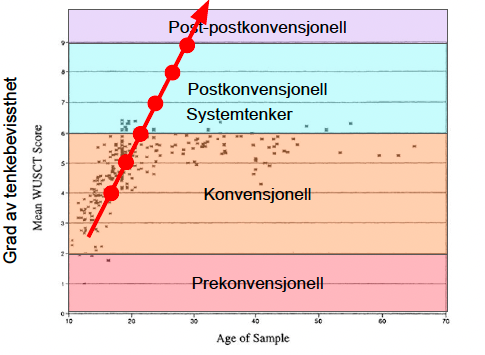

Obeya dagseminaret i Bergen
Obeya – raskere felles læring. Obeya er et visuelt rom for samarbeid mellom ulike funksjoner i en virksomhet, og arkitektur for radikalt bedre samspill på tvers. Ved å visualisere (se sammen), reflektere og prøve ut løsninger skapes raskere læring. På fagseminaret lærte vi om Obeya og delte erfaringer mellom ulike virksomheter.

ALIOS Seminar in Piedmont
Accelerated Learning in Organizations and Society: the annual R&D programme team meeting of ILO COEX, following up the ALIOS project.

Lærende lederskap (Trippel L)
Course programme run by Institute for Learning Organizations and Flowit, in three modules: Lean and systems thinking, learning culture and Obeya, and learning leadership. Sessions were held at Aker Tranby near Drammen, Toyota Jæger Automobil in Bergen and Flowit in Haugesund, with certificates awarded at the Lean conference in Stavanger in September 2024.
Obeya Summit presentation
Bjarne Berg Wig presented the book Systems Thinking with Obeya at the 2023 symposium in Utrecht.
Manufacturing and Supply Chain Conference
Samer Hamadeh spoke on learning culture transformation.
Studietur Piemonte – FlowIT
FlowIT and TPM Lean brukernettverket, together with Institute for Learning Organizations, invited participants on a study trip focused on systems leadership and coaching.

Studietur Piemonte – Samarbeidsutvikling
Samarbeidsutvikling Norge and TPM Lean brukernettverket, together with Institute for Learning Organizations, invited participants on a study trip focused on coaching and systems thinking, for everyone who wants to develop in leadership and Lean.
LOS-studiet 2020 – Lærende organisasjon, lærende system
A new course with three sessions, 12 days in total, during 2020.
Let's start the conversation
Want to learn more about our offerings, or have specific challenges to address? Reach out.